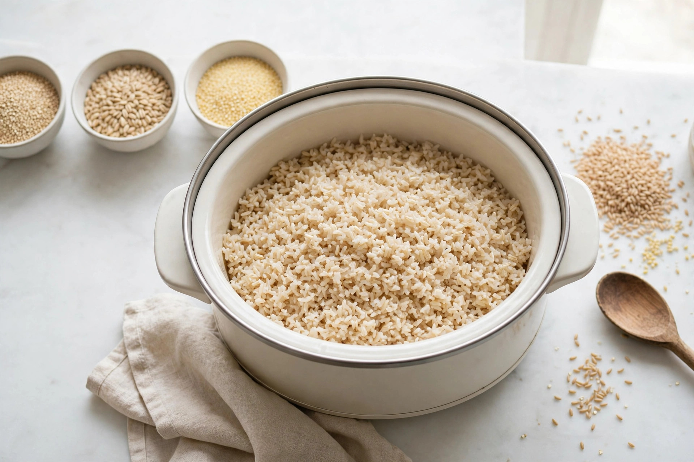

Slow cooker rice and grains: ratios, timing, and no mush

Food-safety disclaimer: this article is general information, not medical or food-safety advice. Cooked rice carries a specific, well-documented risk from Bacillus cereus spores that can survive cooking. Follow the storage and reheating rules in the safety section below — cool cooked rice quickly, refrigerate it promptly, and when in doubt, throw it out.
A slow cooker can cook rice and grains well — large batches, no scorched bottom, no hovering — but it punishes guesswork. The sealed lid traps nearly all the steam a stovetop pot would lose, the heat keeps going long after the grains are tender, and the published ratios contradict each other: reputable-looking guides variously prescribe 1.25, 1.5, and 2 cups of liquid for every cup of white rice in a slow cooker. This guide explains why rice goes mushy, reconciles the ratio conflict, sorts the grains that genuinely suit a long cook from the ones that do not, and ends with the safety section most rice articles skip — because with rice, holding and leftovers are not an afterthought.
Why slow cooker rice goes mushy
Kitchenouse's breakdown of mushy rice names the causes plainly: too much water or steam makes grains swell, lose shape, and stick together; skipping the rinse leaves surface starch that clumps the grains; overcooking does the rest, and insufficient resting prevents even moisture distribution. Every one of those causes is amplified in a slow cooker. The lid returns condensed steam to the pot instead of letting it escape. There is no quick shut-off reflex in a long cook — the grains sit in hot liquid while the cooker coasts. And a ratio copied from a stovetop recipe brings water meant to evaporate into a pot where almost none does. Mush is rarely a mystery; it is usually too much liquid, left too long, over unrinsed rice.
Ratios and timing, grain by grain
Start with the best-documented slow cooker method. The Kitchn's brown rice technique rinses 4 cups of long-grain brown rice, stirs it with 2 teaspoons of kosher salt in a 6-quart or larger slow cooker, and pours in 5 cups of boiling water — a 1.25-to-1 water-to-rice ratio — then lays parchment paper so it touches the water, covers, and cooks on high for 2 to 2.5 hours until the water is absorbed and the rice is tender, finishing with a fork fluff. Three details do the work: the boiling start shortens the time the rice spends warming up, the modest ratio respects the sealed lid, and the parchment keeps condensation from raining unevenly onto the surface.
For white rice, the honest position is a range, not a single magic number. Kitchenouse gives about 1-to-2 for a slow cooker; other published methods cluster lower, around 1.25 to 1.5 cups of liquid per cup of rice, with a covered rest before fluffing. Cookers differ — the USDA puts slow cooker cooking temperatures between 170°F and 280°F, a wide band — so the first batch in any cooker is a calibration: start at the lower end of the range, keep the lid closed, and adjust the next batch by a few tablespoons rather than a full cup. What the sources agree on is the direction of error: in a sealed cooker, excess liquid cannot cook off, so erring dry and correcting beats erring wet and rescuing.
| Grain (1 cup dry) | Slow cooker guidance | Stovetop baseline (Whole Grains Council) | Fit |
|---|---|---|---|
| Long-grain brown rice | 1.25 cups boiling water per cup, high 2–2.5 hours, parchment on surface (The Kitchn, scaled) | 2.5 cups water, 25–45 minutes | Suits it — best documented method |
| Long-grain white rice | About 1.25–1.5 cups liquid to start (published range runs to 2), low end first, lid closed, rest before fluffing | — | Suits it in batches, with calibration |
| Steel-cut oats | Overnight multigrain cooks run 7–8 hours on low until very soft (Simple Nourished Living) | 4 cups water, 20 minutes | Suits it — especially as porridge / cereal |
| Pearl barley | Same overnight multigrain cook, 7–8 hours on low (Simple Nourished Living) | Hulled barley: 3 cups water, 45–60 minutes | Suits it — soups and cereals |
| Wild rice | In soup: 1 cup rice to 8 cups broth, low 7–8 hours or high 3–4 hours (The Kitchn) | 3 cups water, 45–55 minutes | Suits it — in soups with plenty of liquid |
| Quinoa | Only as a minor partner in long mixed-grain cooks; on its own it finishes long before the cooker does | 2 cups water, 12–15 minutes | Poor fit solo — too fast |
| Bulgur | No long cook needed or wanted | 2 cups water, 10–12 minutes | Skip — essentially a soak, not a cook |
| Short-grain / sushi rice | Its stickiness is the point of the style and the failure mode of this method | — | Skip for fluffy-grain goals |
Read the baseline column as the decision logic: the Whole Grains Council chart shows which grains are built for endurance. Hulled barley needs 45 to 60 minutes of simmering, wild rice 45 to 55 — grains like that tolerate, and benefit from, the slow cooker's long arc. Quinoa is done in 12 to 15 minutes and bulgur in 10 to 12; asking them to sit in a hot cooker for hours is asking for porridge, whether porridge was the plan or not.
Which grains suit the slow cooker, and which do not
Suit it: brown rice (with the boiling-water method above), steel-cut oats, barley, and wild rice in soups. The multigrain cereal from Simple Nourished Living is a good template: pearl barley, steel-cut oats, and a smaller measure of rinsed quinoa combined in a 2-quart cooker with water and almond milk, cooked on low for 7 to 8 hours until the grains are very soft — note that the quinoa works there because the goal is a soft cereal and it is a minority ingredient among tougher grains.
Do not suit it: quick grains cooked solo. Quinoa's 12-to-15-minute stovetop time and bulgur's 10-to-12 mean both are finished before a slow cooker has properly warmed through; they emerge blown out and gluey. Short-grain and sushi-style rices are bred for stickiness, which a sealed, steamy cooker exaggerates. Instant and minute products are out of scope entirely — they are pre-cooked, and a long cook only dismantles them. The decision framework is simple: if the stovetop baseline is under about 20 minutes, the slow cooker is the wrong tool unless the grain is a supporting player in a soup, stew, or mixed cereal where softness is acceptable.
The numbered procedure (batch brown or white rice)
- Rinse the rice in a fine-mesh strainer until the water runs clearer — The Kitchn's method starts here, and Kitchenouse identifies unrinsed surface starch as a primary clumping cause. Quinoa, when used, is rinsed too.
- Measure to the low end of the ratio range. For brown rice, use The Kitchn's proportions: 5 cups of water for 4 cups of rice, scaled as needed, in a cooker big enough for the batch. For white rice, start near 1.25 to 1.5 cups of liquid per cup of rice.
- Use boiling water for brown rice, poured over the rinsed rice and salt, exactly as the source method does — it shortens the warm-up stretch.
- Cover the surface (brown rice method): lay parchment paper so it touches the water, then put the lid on.
- Cook without lifting the lid. Brown rice on high runs 2 to 2.5 hours per The Kitchn. Keep the lid in place — the USDA's standing slow cooker guidance — because every lift dumps the steam the grains are cooking in.
- Rest, then fluff. Let the rice stand covered after cooking — Kitchenouse notes that insufficient resting leaves moisture unevenly distributed — then fluff with a fork and serve promptly. Do not park the cooker on warm for hours; see the safety section.
What success looks like: individual grains that are tender through the middle with no chalky core and no puddle in the bottom of the cooker, grains that separate under a fork instead of clumping into a single mass, and a batch that goes to the table — or, within the safety window below, into shallow containers and the refrigerator — instead of sitting warm in the pot.
Holding and leftover rice: the safety section
Rice is the leftover that deserves its own rules. Uncooked rice can contain spores of Bacillus cereus, and those spores can survive cooking; given time at room temperature, they can grow and produce toxins that reheating does not reliably undo. That is why the timeline, not the reheat, is the safety step.
The official numbers, stated plainly. Bacteria grow rapidly in the danger zone between 40°F and 140°F, so refrigerate cooked rice within 2 hours of cooking — within 1 hour if the room is above 90°F. Food Standards Scotland's rice-specific guidance is stricter still: cool cooked rice quickly, ideally within 1 hour, eat refrigerated rice within 24 hours, reheat it until steaming hot all the way through, and never reheat rice more than once. The general US leftover window from FoodSafety.gov is longer — leftovers keep 3 to 4 days refrigerated — and Food Network, citing the FoodSafety.gov FoodKeeper App, gives leftover rice 3 to 4 days in the refrigerator and 1 to 2 months in the freezer. For rice specifically, the conservative course is the rice-specific guidance: cool fast, refrigerate fast, eat soon, freeze what will not be eaten. Whenever rice is reheated, it should reach 165°F, checked with a food thermometer.
The practical consequence for slow cooker cooks: the warm setting is a short bridge to serving, not a storage plan. A batch that finishes at noon and is meant for an evening dinner should be cooled in shallow containers, refrigerated, and reheated to 165°F at serving time — not held warm in the cooker all afternoon. Cooked grains mixed into soups and stews follow the general leftover rules for those dishes, but plain cooked rice gets the rice rules, every time.
FAQ
The batch still came out wet. What now? Kitchenouse's rescue for gummy rice is to spread it on a baking sheet and bake it briefly to dry it out. Next batch, drop the liquid toward the low end of the range and resist lifting the lid — condensation management is half the recipe.
Can grains cook inside a stew instead? Yes — that is wild rice's best use here: The Kitchn's chicken and wild rice soup cooks 1 cup of wild rice in 8 cups of broth for 7 to 8 hours on low. Grains that are part of a soup are judged by the soup's texture, not by fluffy-grain standards.
Is it safe to leave cooked rice in the cooker on warm overnight? No. That is exactly the long, warm holding pattern the rice guidance warns against. Cool it, refrigerate it within the window above, and reheat it to 165°F when it is time to eat.
Choose grains built for the long cook, start dry rather than wet, keep the lid down — and treat the leftovers clock as part of the recipe. Do those four things and the slow cooker is a genuinely good grain cooker.